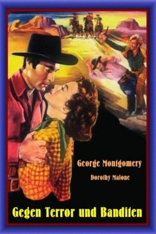

#8069 Drei bissen ins Gras - Gegen Terror und Banditen
Alternativ: The Lone Gun
 
 IMDB-Wertung: 5.8 / 10
IMDB-Wertung: 5.8 / 10  Metascore: 0
Metascore: 0 
Das Western-Städtchen Marlpine wird von den Moran-Brüdern terrorisiert. Der neue Marshall Cruze freundet sich mit der jungen Rancherin Charlotte an. Seit deren Bruder einst von der Gang erschossen wurde, ist sie den Moran-Brüdern hilflos ausgeliefert. Cruze stellt sich den Banditen entgegen.
Jahr: 1954
Dauer: 71 Minuten
FSK: 12
Land: USA Studio: A United Artists ReleaseTonspuren: DD2.0 - ,
Untertitel:
Auflösung: 1080p (1440x1080) Größe: 3328 MB
Genre: Western, Liebe
Regisseur: Ray Nazarro
Drehbuch: Don Martin
Soundtrack: Irving Gertz
Darsteller:
Datei: X:\HD-Western-1900-1959\Drei bissen ins Gras - Gegen Terror und Banditen (1954, FSK12, 1440x1080).mkv seit 21.01.2018
Festplatte: HD Eastern+Western
 Es gibt insgesamt 98 Filme in der Gruppe 'HD-Western-1900-1959'
Es gibt insgesamt 98 Filme in der Gruppe 'HD-Western-1900-1959'